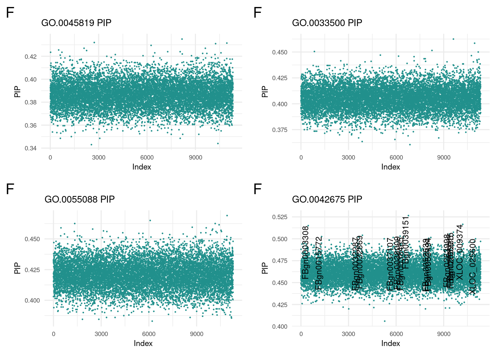
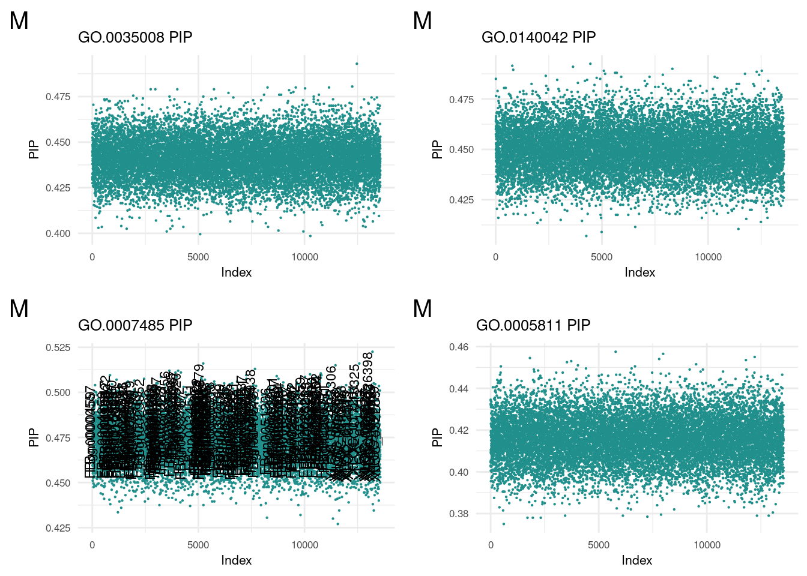

Last updated: 2023-11-28
Checks: 7 0
Knit directory: dgrp-starve/
This reproducible R Markdown analysis was created with workflowr (version 1.7.1). The Checks tab describes the reproducibility checks that were applied when the results were created. The Past versions tab lists the development history.
Great! Since the R Markdown file has been committed to the Git repository, you know the exact version of the code that produced these results.
Great job! The global environment was empty. Objects defined in the global environment can affect the analysis in your R Markdown file in unknown ways. For reproduciblity it’s best to always run the code in an empty environment.
The command set.seed(20221101) was run prior to running the code in the R Markdown file. Setting a seed ensures that any results that rely on randomness, e.g. subsampling or permutations, are reproducible.
Great job! Recording the operating system, R version, and package versions is critical for reproducibility.
Nice! There were no cached chunks for this analysis, so you can be confident that you successfully produced the results during this run.
Great job! Using relative paths to the files within your workflowr project makes it easier to run your code on other machines.
Great! You are using Git for version control. Tracking code development and connecting the code version to the results is critical for reproducibility.
The results in this page were generated with repository version d2b97de. See the Past versions tab to see a history of the changes made to the R Markdown and HTML files.
Note that you need to be careful to ensure that all relevant files for the analysis have been committed to Git prior to generating the results (you can use wflow_publish or wflow_git_commit). workflowr only checks the R Markdown file, but you know if there are other scripts or data files that it depends on. Below is the status of the Git repository when the results were generated:
Ignored files:
Ignored: .snakemake/
Ignored: code/methodComp/bglr/err-bglr-f.5381.err
Ignored: code/methodComp/bglr/err-bglr-m.5382.err
Ignored: code/methodComp/m/meth-m.4676.err
Ignored: code/methodComp/m/meth-m.4685.err
Ignored: code/methodComp/method-f.4751.out
Ignored: data/fb/
Ignored: data/snake/
Ignored: snake/.snakemake/
Ignored: snake/GOfile.yaml
Ignored: snake/ReadMe.md
Ignored: snake/Snakefile.yaml
Ignored: snake/bayesCheck.R
Ignored: snake/bayesTest.Rds
Ignored: snake/binner2.R
Ignored: snake/code/misc/
Ignored: snake/data/
Ignored: snake/datafile.yaml
Ignored: snake/dgrp.yaml
Ignored: snake/f_file.yaml
Ignored: snake/goNames.sh
Ignored: snake/goPost/
Ignored: snake/gofig.yaml
Ignored: snake/gospace.R
Ignored: snake/h2_synth.R
Ignored: snake/labMake.R
Ignored: snake/logs/
Ignored: snake/meta.sh
Ignored: snake/metaList
Ignored: snake/newlines
Ignored: snake/note1
Ignored: snake/pipelines/
Ignored: snake/rawHits
Ignored: snake/s1.sh
Ignored: snake/s2.sh
Ignored: snake/s3.sh
Ignored: snake/slurm/
Ignored: snake/smake.sbatch
Ignored: snake/snubnose.sbatch
Ignored: snake/srfile.yaml
Ignored: snake/temp9/
Ignored: snake/temporaire-rewrite.R
Ignored: snake/trimHits
Ignored: snake/vavrfile.yaml
Ignored: snake/vavrmake
Ignored: snake/zz_lost/
Ignored: zz_lost/
Untracked files:
Untracked: analysis/old_index.Rmd.Rmd
Untracked: forester.R
Untracked: malegofind.R
Untracked: snake/code/binner.R
Untracked: snake/code/combine_GO.R
Untracked: snake/code/dataFinGO.R
Untracked: snake/code/datafile.yaml
Untracked: snake/code/filterNcombine_GO.R
Untracked: snake/code/filter_GO.R
Untracked: snake/code/go/
Untracked: snake/code/method/bayesHome.R
Untracked: snake/code/method/multiplotGO.Rmd
Untracked: snake/code/srfile.yaml
Unstaged changes:
Modified: analysis/Method/BayesC.Rmd
Modified: analysis/bigGO.Rmd
Modified: snake/code/method/bayesGO.R
Modified: snake/code/method/goFish.R
Modified: snake/code/method/varbvs.R
Note that any generated files, e.g. HTML, png, CSS, etc., are not included in this status report because it is ok for generated content to have uncommitted changes.
These are the previous versions of the repository in which changes were made to the R Markdown (analysis/goReport.Rmd) and HTML (docs/goReport.html) files. If you’ve configured a remote Git repository (see ?wflow_git_remote), click on the hyperlinks in the table below to view the files as they were in that past version.
| File | Version | Author | Date | Message |
|---|---|---|---|---|
| Rmd | d2b97de | nklimko | 2023-11-28 | wflow_publish(“analysis/goReport.Rmd”) |
| html | 2230527 | nklimko | 2023-11-28 | Build site. |
| Rmd | 979c389 | nklimko | 2023-11-28 | wflow_publish(“analysis/goReport.Rmd”) |
| html | fa620e8 | nklimko | 2023-11-28 | Build site. |
| Rmd | 7c77c72 | nklimko | 2023-11-28 | wflow_publish(“analysis/goReport.Rmd”) |
| html | fe88a0c | nklimko | 2023-11-28 | Build site. |
| Rmd | 3dd7953 | nklimko | 2023-11-28 | wflow_publish(“analysis/goReport.Rmd”) |
| html | 12d6df4 | nklimko | 2023-11-28 | Build site. |
| Rmd | feaa8df | nklimko | 2023-11-28 | wflow_publish(“analysis/goReport.Rmd”) |
| html | 8ab4763 | nklimko | 2023-11-28 | Build site. |
| Rmd | 2e7171f | nklimko | 2023-11-28 | wflow_publish(“analysis/goReport.Rmd”) |
#setwd("..")
#Correlation Coefficient Paths
uniF <- readRDS('snake/data/go/40_all/sexf/partData.Rds')
uniM <- readRDS('snake/data/go/40_all/sexm/partData.Rds')#reorders 50 X m table to a (50*m) X 2 table
#converts method into factor to retain order
ggTidy <- function(data){
for(i in 1:dim(data)[2]){
name <- colnames(data)[i]
temp <- cbind(rep(name, dim(data)[1]), data[,i, with=FALSE])
if(i==1){
hold <- temp
} else{
hold <- rbind(hold, temp, use.names=FALSE)
}
}
colnames(hold) <- c("method", "cor")
hold$method <- factor(hold$method, levels=unique(hold$method))
return(hold)
}
#wrapper for ggplot call to custom fill sex, title, and y axis label
ggMake <- function(data, sex, custom.title, custom.Ylab){
plothole <- ggplot(data, aes(x=method, y=cor, fill=method)) +
geom_violin(color = NA, width = 0.65) +
geom_boxplot(color='#440154FF', width = 0.15) +
theme_minimal() +
stat_summary(fun=mean, color='#440154FF', geom='point',
shape=18, size=3, show.legend=FALSE) +
labs(x=NULL,y=custom.Ylab, tag=sex, title=custom.title) +
theme(legend.position='none',
axis.text.x = element_text(angle = -45, size=10),
text=element_text(size=10),
plot.tag = element_text(size=15)) +
scale_fill_viridis(begin = 0.4, end=0.9,discrete=TRUE)
return(plothole)
}
corSummary <- function(dataList, outPath){
hold <- readRDS(dataList[1])
for (i in 2:length(dataList)) {
#print(i)
hold <- rbind(hold, readRDS(dataList[i]))
}
colnames(hold) <- c('sex', 'rmax', 'rgo', 'term', 'cor')
saveRDS(hold, outPath)
}partMake <- function(data, sex, yint1, cutoff, lower, custom.title, custom.Xlab, custom.Ylab){
plothole <- ggplot(data,aes(y=cor,x=term))+
geom_point(color=viridis(1, begin=0.5))+
geom_text(aes(label=ifelse(cor>cutoff, as.character(term),'')), hjust=-0.1, size=2, angle=90)+
geom_text(aes(label=ifelse(cor<lower, as.character(term),'')), hjust=-0.1, size=2, angle=90)+
geom_hline(yintercept = yint1) +
geom_hline(yintercept = cutoff) +
theme_minimal() +
labs(x=custom.Xlab,y=custom.Ylab, tag=sex, title=custom.title) +
theme(text=element_text(size=10),
plot.tag = element_text(size=15))
return(plothole)
}
dMake <- function(data, sex, custom.title, custom.Xlab, custom.Ylab, psize){
plothole <- ggplot(data, aes(x= index, y=cor, label=gene))+
geom_point(color=viridis(1, begin=0.5), size=psize)+
geom_text(aes(label=ifelse(cor>0.5, as.character(gene),'')),hjust=1,vjust=0, angle=90, size=3)+
theme_minimal() +
labs(x=custom.Xlab,y=custom.Ylab, tag=sex, title=custom.title) +
theme(text=element_text(size=8),
plot.tag = element_text(size=15))
return(plothole)
}Initial results showed that Gene Ontology association could be used to improve prediction accuracy of a Bayesian model by assigning genes of interest a separate portion of variance. The following results are from selecting GO terms with five or more associated genes and scoring their prediction accuracy as a mean of 25 replicates apiece.
allNames <- read.table(file="snake/goPost/dataList", sep="")
dataList <- allNames[,1]
front <- 'snake/data/go/33_metric/sexf/rmax0.8/rgo0.01/'
end <- '/rowData.Rds'
finalList <- paste0(front, dataList, end)
outPath <- 'snake/data/go/40_all/sexf/partData.Rds'
temp <- na.omit(readRDS(outPath))
facs <- matrix(as.factor(unlist(temp[,1:4])), ncol=4)
cors <- as.numeric(unlist(temp[,5]))
data <- data.table(facs, cors)
colnames(data) <- c('sex', 'rmax', 'rgo', 'term', 'cor')
dataF <- data[data$sex=='f',]
yintData1 <- readRDS('snake/data/sr/33_metric/go/sexf/rmax0.8/rgo0/term1/rowData.Rds')
yF <- as.numeric(yintData1[5])
#
gg[[1]] <- partMake(dataF, 'F', yF, 0.36, 0.27, 'Effect of GO Annotations in Bayesian models', 'GO Term', 'Prediction Accuracy')
dataFOF <- dataF[order(cor),]
#post processing
temp99 <- readRDS("snake/data/go/40_all/sexf/partData.Rds")
subF <- dataF[cor>0.36,4:5]
subF <- subF[order(-cor),]
#
#plot(x=1:dim(dataFOF)[1], y=dataFOF$cor)#snake/
allNames <- read.table(file="snake/goPost/dataList", sep="")
dataList <- allNames[,1]
front <- 'snake/data/go/33_metric/sexm/rmax0.8/rgo0.01/'
end <- '/rowData.Rds'
finalList <- paste0(front, dataList, end)
outPath <- 'snake/data/go/40_all/sexm/partData.Rds'
temp <- na.omit(readRDS(outPath))
facs <- matrix(as.factor(unlist(temp[,1:4])), ncol=4)
cors <- as.numeric(unlist(temp[,5]))
data <- data.table(facs, cors)
colnames(data) <- c('sex', 'rmax', 'rgo', 'term', 'cor')
dataM <- data[data$sex=='m',]
yintData1 <- readRDS('snake/data/sr/33_metric/go/sexm/rmax0.8/rgo0/term1/rowData.Rds')
yM <- as.numeric(yintData1[5])
#
gg[[2]] <- partMake(dataM, 'M', yM, 0.48, 0.40, 'Effect of GO Annotations in Bayesian models', 'GO Term', 'Prediction Accuracy')
dataMOM <- dataM[order(cor),]
#post processing
#temp99 <- readRDS("snake/data/go/40_all/sexm/partData.Rds")
subM <- dataM[cor>0.48,4:5]
subM <- subM[order(-cor),]
#plot(x=1:dim(dataFOF)[1], y=dataFOF$cor)termReader <- function(term, sex)
{
idPath <- paste0('snake/data/go/03_goterms/sex', sex,'/', term, '.Rds')
fitPath <- paste0('snake/data/go/25_fit/sex', sex,'/', term, '/bayesFull.Rds')
xpPath <- paste0('snake/data/01_matched/', sex,'_starvation.Rds')
xp <- readRDS(xpPath)
genes <- colnames(xp[,-1])
id1 <- readRDS(idPath)
model1 <- readRDS(fitPath)
fit1 <- model1$fit
inlay <- fit1$ETA[[1]]$d
outlay <- fit1$ETA[[2]]$d
fitDataM <- data.table(index=c(1:length(inlay)), cor=inlay, gene=genes[id1])
plothole <- dMake(fitDataM, toupper(sex), paste0(term, " PIP"), 'Index', 'PIP', 1)
return(plothole)
}
f1 <- termReader('GO.0045819', 'f')
f2 <- termReader('GO.0033500', 'f')
f3 <- termReader('GO.0055088', 'f')
f4 <- termReader('GO.0042675', 'f')
m1 <- termReader('GO.0035008', 'm')
m2 <- termReader('GO.0140042', 'm')
m3 <- termReader('GO.0007485', 'm')
m4 <- termReader('GO.0005811', 'm')nonReader <- function(term, sex)
{
idPath <- paste0('snake/data/go/03_goterms/sex', sex,'/', term, '.Rds')
fitPath <- paste0('snake/data/go/25_fit/sex', sex,'/', term, '/bayesFull.Rds')
xpPath <- paste0('snake/data/01_matched/', sex,'_starvation.Rds')
xp <- readRDS(xpPath)
genes <- colnames(xp[,-1])
id1 <- readRDS(idPath)
model1 <- readRDS(fitPath)
fit1 <- model1$fit
inlay <- fit1$ETA[[1]]$d
outlay <- fit1$ETA[[2]]$d
fitDataM <- data.table(index=c(1:length(outlay)), cor=outlay, gene=genes[-id1])
plothole <- dMake(fitDataM, toupper(sex), paste0(term, " PIP"), 'Index', 'PIP', 0.1)
return(plothole)
}
nf1 <- nonReader('GO.0045819', 'f')
nf2 <- nonReader('GO.0033500', 'f')
nf3 <- nonReader('GO.0055088', 'f')
nf4 <- nonReader('GO.0042675', 'f')
nm1 <- nonReader('GO.0035008', 'm')
nm2 <- nonReader('GO.0140042', 'm')
nm3 <- nonReader('GO.0007485', 'm')
nm4 <- nonReader('GO.0005811', 'm')print(subF) term cor
1: GO.0045819 0.4382497
2: GO.0033500 0.4231229
3: GO.0055088 0.4178735
4: GO.0042675 0.4014416
5: GO.0042277 0.3994211
6: GO.0008586 0.3984704
7: GO.0016042 0.3919625
8: GO.0007368 0.3873729
9: GO.0007638 0.3856025
10: GO.0006644 0.3799043
11: GO.0010898 0.3798619
12: GO.0046488 0.3777651
13: GO.0034389 0.3753829
14: GO.0017056 0.3736580
15: GO.0006865 0.3734180
16: GO.0016056 0.3729896
17: GO.0009267 0.3709695
18: GO.0070328 0.3692209
19: GO.0061883 0.3691317
20: GO.0007458 0.3686037
21: GO.0030381 0.3684766
22: GO.0007313 0.3681358
23: GO.0008188 0.3658592
24: GO.0005518 0.3644649
25: GO.0045466 0.3643595
26: GO.0000164 0.3641153
27: GO.0046673 0.3614228
28: GO.0000055 0.3606683
29: GO.0038004 0.3605215
30: GO.0032922 0.3600324
term corplot_grid(f1, f2, f3, f4, ncol=2)
| Version | Author | Date |
|---|---|---|
| 2230527 | nklimko | 2023-11-28 |
plot_grid(nf1, nf2, nf3, nf4, ncol=2)
| Version | Author | Date |
|---|---|---|
| 2230527 | nklimko | 2023-11-28 |
The low female outlier is GO:0031408 responsible for oxylipin synthesis.
We then translated the top GO terms into human readable categories to assess our findings. Below are the top ten ordered by correlation:
id: GO:0045819 name: positive regulation of glycogen catabolic process
id: GO:0033500 name: carbohydrate homeostasis
id: GO:0055088 name: lipid homeostasis
id: GO:0042675 name: compound eye cone cell differentiation
id: GO:0042277 name: peptide binding
id: GO:0008586 name: imaginal disc-derived wing vein morphogenesis
id: GO:0016042 name: lipid catabolic process
id: GO:0007368 name: determination of left/right symmetry
id: GO:0007638 name: mechanosensory behavior
id: GO:0006644 name: phospholipid metabolic process
print(subM) term cor
1: GO.0035008 0.5116379
2: GO.0140042 0.5064311
3: GO.0007485 0.5062906
4: GO.0005811 0.5009641
5: GO.0045819 0.5000330
6: GO.0042461 0.4984272
7: GO.0033500 0.4984207
8: GO.0016327 0.4978650
9: GO.0045186 0.4927519
10: GO.0006044 0.4924000
11: GO.0040018 0.4923077
12: GO.0042593 0.4918994
13: GO.0016042 0.4875109
14: GO.0045196 0.4866070
15: GO.0034333 0.4857293
16: GO.0005912 0.4853594
17: GO.0007265 0.4849572
18: GO.0006646 0.4847660
19: GO.0070328 0.4844510
20: GO.0052650 0.4835012
21: GO.0045793 0.4831989
term corplot_grid(m1, m2, m3, m4, ncol=2)
| Version | Author | Date |
|---|---|---|
| 2230527 | nklimko | 2023-11-28 |
plot_grid(nm1, nm2, nm3, nm4, ncol=2)
| Version | Author | Date |
|---|---|---|
| 2230527 | nklimko | 2023-11-28 |
No extreme outlier was found in males.
We then translated the top GO terms into human readable categories to assess our findings. Below are the top ten ordered by correlation:
id: GO:0035008 name: positive regulation of melanization defense response
id: GO:0140042 name: lipid droplet formation
id: GO:0007485 name: imaginal disc-derived male genitalia development
id: GO:0005811 name: lipid droplet
id: GO:0045819 name: positive regulation of glycogen catabolic process
id: GO:0042461 name: photoreceptor cell development
id: GO:0033500 name: carbohydrate homeostasis
id: GO:0016327 name: apicolateral plasma membrane
id: GO:0045186 name: zonula adherens assembly
id: GO:0006044 name: N-acetylglucosamine metabolic process
Beyond this, we took the models to determine if certain genes were enriched in the GO terms of interest. From the terms above the cutoff, we pooled the associated genes and totaled gene occurrence.
Females: Out of 323 genes, 37 appeared more than once and 14 appeared twice or more.
Males: Out of 448 genes, 50 appeared more than once and 14 appeared twice or more.
After establishing unique genes, we translated the FlyBase gene codes to human-readable genes.
geneMatchF <- readRDS('snake/goPost/finalDataF.Rds')
geneMatchM <- readRDS('snake/goPost/finalDataM.Rds')
hitF <- geneMatchF[which(count>2),]
hitM <- geneMatchM[which(count>2),]
d1 <- cbind(hitF, hitM)
colnames(d1) <- c('Female Gene', 'Count', 'Gene', 'Male Gene', 'Count', 'Gene')
kable(d1, caption = 'Top Female and Male Genes', "simple")| Female Gene | Count | Gene | Male Gene | Count | Gene |
|---|---|---|---|---|---|
| FBgn0025595 | 8 | AkhR | FBgn0265778 | 5 | PDZ-GEF |
| FBgn0000575 | 7 | emc | FBgn0025595 | 5 | AkhR |
| FBgn0004552 | 4 | Akh | FBgn0261873 | 5 | sdt |
| FBgn0283499 | 4 | InR | FBgn0036046 | 5 | Ilp2 |
| FBgn0003731 | 4 | Egfr | FBgn0283499 | 5 | InR |
| FBgn0000490 | 4 | dpp | FBgn0086687 | 4 | Desat1 |
| FBgn0003205 | 4 | Ras85D | FBgn0036449 | 3 | bmm |
| FBgn0262738 | 4 | norpA | FBgn0004552 | 3 | Akh |
| FBgn0010303 | 3 | hep | FBgn0003205 | 3 | Ras85D |
| FBgn0015279 | 3 | Pi3K92E | FBgn0015279 | 3 | Pi3K92E |
| FBgn0033799 | 3 | GLaz | FBgn0067864 | 3 | Patj |
| FBgn0036449 | 3 | bmm | FBgn0261854 | 3 | aPKC |
| FBgn0003463 | 3 | sog | FBgn0263289 | 3 | scrib |
| FBgn0003719 | 3 | tld | FBgn0024248 | 3 | chico |
The following five genes are implicated in both male and female prediction. All are related to some form of lipid processing.
Adipokinetic hormone + receptor:
Insulin Receptor pathway:
Brummer: triglyceride lipase:
sessionInfo()R version 4.1.2 (2021-11-01)
Platform: x86_64-pc-linux-gnu (64-bit)
Running under: Rocky Linux 8.5 (Green Obsidian)
Matrix products: default
BLAS/LAPACK: /opt/ohpc/pub/libs/gnu9/openblas/0.3.7/lib/libopenblasp-r0.3.7.so
locale:
[1] LC_CTYPE=en_US.UTF-8 LC_NUMERIC=C
[3] LC_TIME=en_US.UTF-8 LC_COLLATE=en_US.UTF-8
[5] LC_MONETARY=en_US.UTF-8 LC_MESSAGES=en_US.UTF-8
[7] LC_PAPER=en_US.UTF-8 LC_NAME=C
[9] LC_ADDRESS=C LC_TELEPHONE=C
[11] LC_MEASUREMENT=en_US.UTF-8 LC_IDENTIFICATION=C
attached base packages:
[1] stats graphics grDevices utils datasets methods base
other attached packages:
[1] knitr_1.43 reshape2_1.4.4 melt_1.10.0 ggcorrplot_0.1.4.1
[5] lubridate_1.9.3 forcats_1.0.0 stringr_1.5.0 purrr_1.0.1
[9] readr_2.1.4 tidyr_1.3.0 tibble_3.2.1 tidyverse_2.0.0
[13] scales_1.2.1 viridis_0.6.4 viridisLite_0.4.2 qqman_0.1.9
[17] cowplot_1.1.1 ggplot2_3.4.4 data.table_1.14.8 dplyr_1.1.3
[21] workflowr_1.7.1
loaded via a namespace (and not attached):
[1] Rcpp_1.0.11 getPass_0.2-2 ps_1.7.5 rprojroot_2.0.3
[5] digest_0.6.33 utf8_1.2.3 plyr_1.8.9 R6_2.5.1
[9] evaluate_0.21 highr_0.10 httr_1.4.7 pillar_1.9.0
[13] rlang_1.1.1 rstudioapi_0.15.0 whisker_0.4.1 callr_3.7.3
[17] jquerylib_0.1.4 rmarkdown_2.23 labeling_0.4.3 munsell_0.5.0
[21] compiler_4.1.2 httpuv_1.6.12 xfun_0.39 pkgconfig_2.0.3
[25] htmltools_0.5.5 tidyselect_1.2.0 gridExtra_2.3 fansi_1.0.4
[29] calibrate_1.7.7 tzdb_0.4.0 withr_2.5.0 later_1.3.1
[33] MASS_7.3-60 grid_4.1.2 jsonlite_1.8.7 gtable_0.3.4
[37] lifecycle_1.0.3 git2r_0.32.0 magrittr_2.0.3 cli_3.6.1
[41] stringi_1.7.12 cachem_1.0.8 farver_2.1.1 fs_1.6.3
[45] promises_1.2.0.1 bslib_0.5.0 generics_0.1.3 vctrs_0.6.4
[49] tools_4.1.2 glue_1.6.2 hms_1.1.3 processx_3.8.2
[53] fastmap_1.1.1 yaml_2.3.7 timechange_0.2.0 colorspace_2.1-0
[57] sass_0.4.7